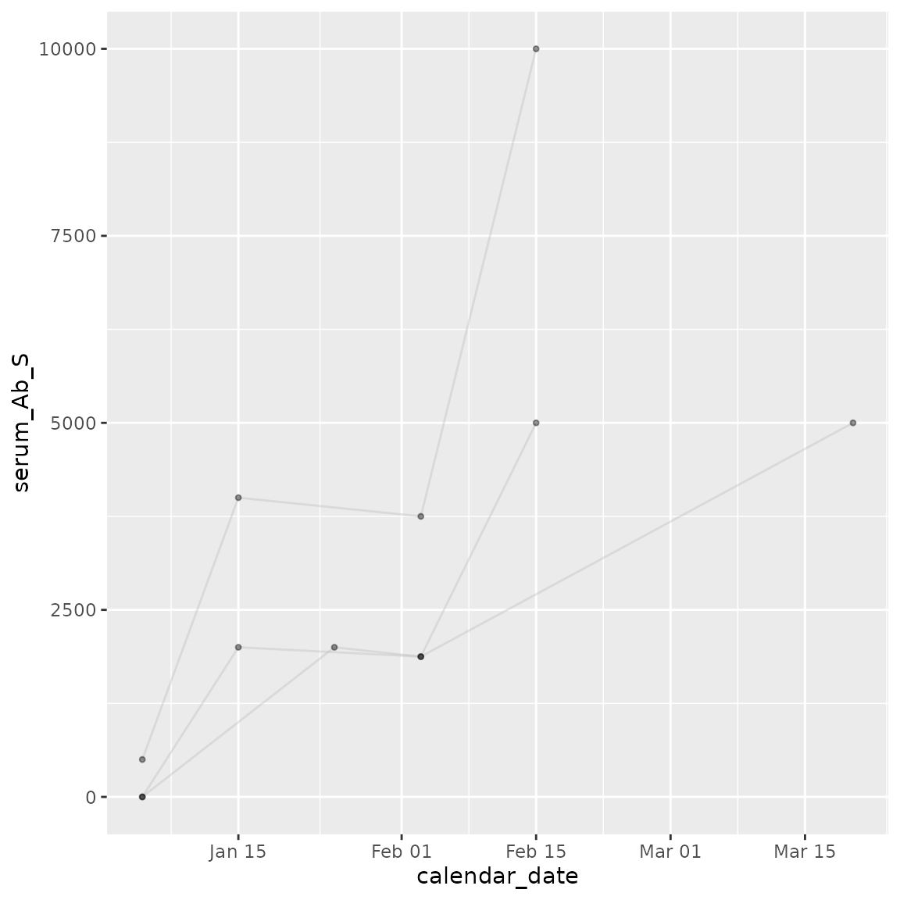
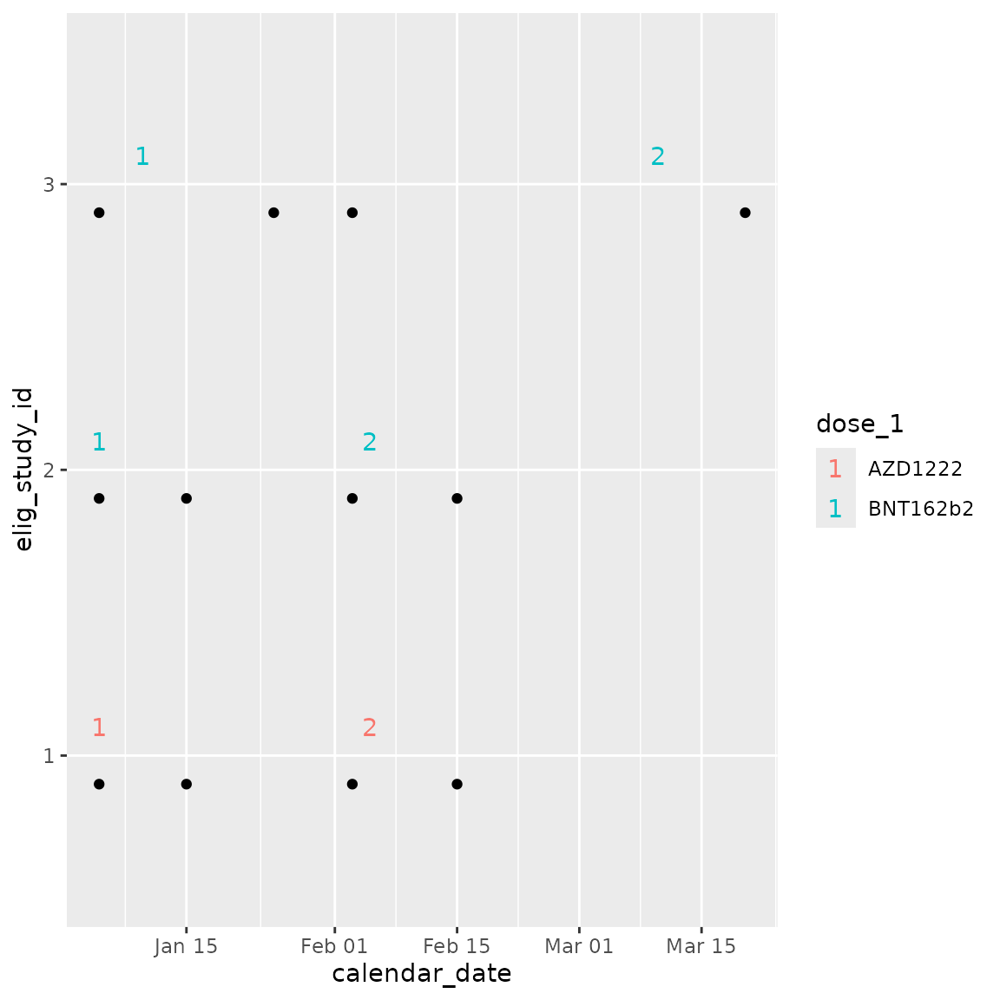

The Whole Game
chronogram.RmdThis vignette is for the impatient and showcases the features of the chronogram package.
Construct chronogram
## Fictional example data ##
data(smallstudy)
ids <- smallstudy$small_study_ids
start <- "01012020"
end <- "10102021"
meta <- smallstudy$small_study_metadata
ab <- smallstudy$small_study_Ab
small_study <- chronogram_skeleton(
ids = ids,
start_date = start,
end_date = end,
## change this to your ID column name ##
col_ids = elig_study_id,
## change this to your date column name ##
col_calendar_date = calendar_date
)
small_study <- chronogram(small_study, meta)
small_study <- cg_add_experiment(small_study, ab)Plot trajectories
Plot antibody responses over time for each individual, with a swimmer plot to summarise each individuals course.
traj <- cg_plot(small_study,
y_values = serum_Ab_S
)
#> Function provided to illustrate chronogram ->
#> ggplot2 interface.
#> Users are likely to want to write their own,
#> study-specific applications
swimmer <- cg_plot_meta(small_study,
visit = serum_Ab_S
)
#> Function provided to illustrate chronogram ->
#> ggplot2 interface.
#> Function assumes the
#> presence of {dose_1, date_dose_1, dose_2, date_dose_2}
#> columns.
#> Users are likely to want to write their own,
#> study-specific applications
traj
swimmer
Customise plots
Using ggplot2 or patchwork adjustments.
lay <- "
a
a
a
b
"
(
(traj + labs(y = "anti-S IgG") + scale_y_log10()) /
(swimmer + theme(axis.text.y = element_blank()))
) +
plot_layout(design = lay) &
plot_annotation(tag_levels = "A") &
theme_bw(base_size = 8) &
theme(legend.position = "none") &
theme(plot.tag = element_text(size = 16, face = "bold")) &
labs(x = "date")
#> Warning in scale_y_log10(): log-10 transformation introduced infinite values.
#> log-10 transformation introduced infinite values.
Subset data
## upto 50d after dose 2 ##
cg_after_dose_2 <- cg_window_by_metadata(small_study,
windowing_date_col = date_dose_2,
preceding_days = 0,
following_days = 50
)
## upto 21d before dose 2 ##
cg_before_dose_2 <- cg_window_by_metadata(small_study,
windowing_date_col = date_dose_2,
preceding_days = 21,
following_days = 0
)
cg_after_dose_2 <- cg_after_dose_2 %>% mutate(cohort = "post D2")
cg_before_dose_2 <- cg_before_dose_2 %>% mutate(cohort = "pre D2")
cg_dose_2 <- bind_rows(cg_after_dose_2, cg_before_dose_2)
cg_dose_2 <- cg_dose_2 %>% mutate(
cohort =
factor(cohort,
levels = c(
"pre D2",
"post D2"
)
)
)Re-plot the subsetted data
traj_2 <- cg_dose_2 %>%
cg_plot(.,
y_values = serum_Ab_S
)
#> Function provided to illustrate chronogram ->
#> ggplot2 interface.
#> Users are likely to want to write their own,
#> study-specific applications
pd <- position_dodge(0.4)
violin_2 <- cg_dose_2 %>%
## geom_line fails if lots of NA rows provided ##
filter(!is.na(serum_Ab_S)) %>%
ggplot(aes(
x = cohort, y = serum_Ab_S,
group = elig_study_id
)) +
geom_point(position = pd) +
geom_line(position = pd)
swimmer_2 <- cg_plot_meta(cg_dose_2,
visit = serum_Ab_S
)
#> Function provided to illustrate chronogram ->
#> ggplot2 interface.
#> Function assumes the
#> presence of {dose_1, date_dose_1, dose_2, date_dose_2}
#> columns.
#> Users are likely to want to write their own,
#> study-specific applications
lay2 <- "
aac
aac
aa#
bb#
"
(
(traj_2 +
labs(y = "anti-S IgG", x = "date") +
scale_y_log10()) +
(swimmer_2 +
labs(x = "date") +
theme(axis.text.y = element_blank())) +
(violin_2 +
labs(y = "anti-S IgG") +
scale_y_continuous(trans = "log10") +
annotation_logticks(sides = "l"))
) +
plot_layout(design = lay2) &
plot_annotation(tag_levels = "A") &
theme_bw(base_size = 8) &
theme(legend.position = "none") &
theme(plot.tag = element_text(size = 16, face = "bold"))
Note that for participant 3, the sample ~50d before dose 2 is now excluded.
Summary
Chronogram is now assembled and the relevant data to answer a (simple) biological question (does dose 2 boost anti-S IgG?) retrieved, plotted and readied for a statistical test.
Please see the other vignettes for a deeper demonstration of chronogram functions.
SessionInfo
sessionInfo()
#> R version 4.4.1 (2024-06-14)
#> Platform: x86_64-pc-linux-gnu
#> Running under: Ubuntu 22.04.4 LTS
#>
#> Matrix products: default
#> BLAS: /usr/lib/x86_64-linux-gnu/openblas-pthread/libblas.so.3
#> LAPACK: /usr/lib/x86_64-linux-gnu/openblas-pthread/libopenblasp-r0.3.20.so; LAPACK version 3.10.0
#>
#> locale:
#> [1] LC_CTYPE=C.UTF-8 LC_NUMERIC=C LC_TIME=C.UTF-8
#> [4] LC_COLLATE=C.UTF-8 LC_MONETARY=C.UTF-8 LC_MESSAGES=C.UTF-8
#> [7] LC_PAPER=C.UTF-8 LC_NAME=C LC_ADDRESS=C
#> [10] LC_TELEPHONE=C LC_MEASUREMENT=C.UTF-8 LC_IDENTIFICATION=C
#>
#> time zone: UTC
#> tzcode source: system (glibc)
#>
#> attached base packages:
#> [1] stats graphics grDevices utils datasets methods base
#>
#> other attached packages:
#> [1] chronogram_1.0.0 patchwork_1.2.0 ggplot2_3.5.1 dplyr_1.1.4
#>
#> loaded via a namespace (and not attached):
#> [1] gtable_0.3.5 jsonlite_1.8.8 highr_0.11 compiler_4.4.1
#> [5] tidyselect_1.2.1 tidyr_1.3.1 jquerylib_0.1.4 systemfonts_1.1.0
#> [9] scales_1.3.0 textshaping_0.4.0 yaml_2.3.9 fastmap_1.2.0
#> [13] R6_2.5.1 labeling_0.4.3 generics_0.1.3 knitr_1.48
#> [17] tibble_3.2.1 desc_1.4.3 munsell_0.5.1 lubridate_1.9.3
#> [21] bslib_0.7.0 pillar_1.9.0 rlang_1.1.4 utf8_1.2.4
#> [25] cachem_1.1.0 xfun_0.45 fs_1.6.4 sass_0.4.9
#> [29] timechange_0.3.0 cli_3.6.3 pkgdown_2.1.0 withr_3.0.0
#> [33] magrittr_2.0.3 digest_0.6.36 grid_4.4.1 lifecycle_1.0.4
#> [37] vctrs_0.6.5 evaluate_0.24.0 glue_1.7.0 farver_2.1.2
#> [41] ragg_1.3.2 fansi_1.0.6 colorspace_2.1-0 purrr_1.0.2
#> [45] rmarkdown_2.27 tools_4.4.1 pkgconfig_2.0.3 htmltools_0.5.8.1